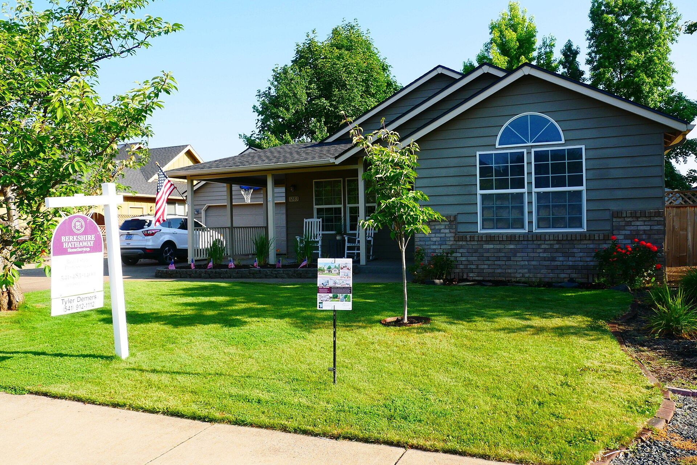
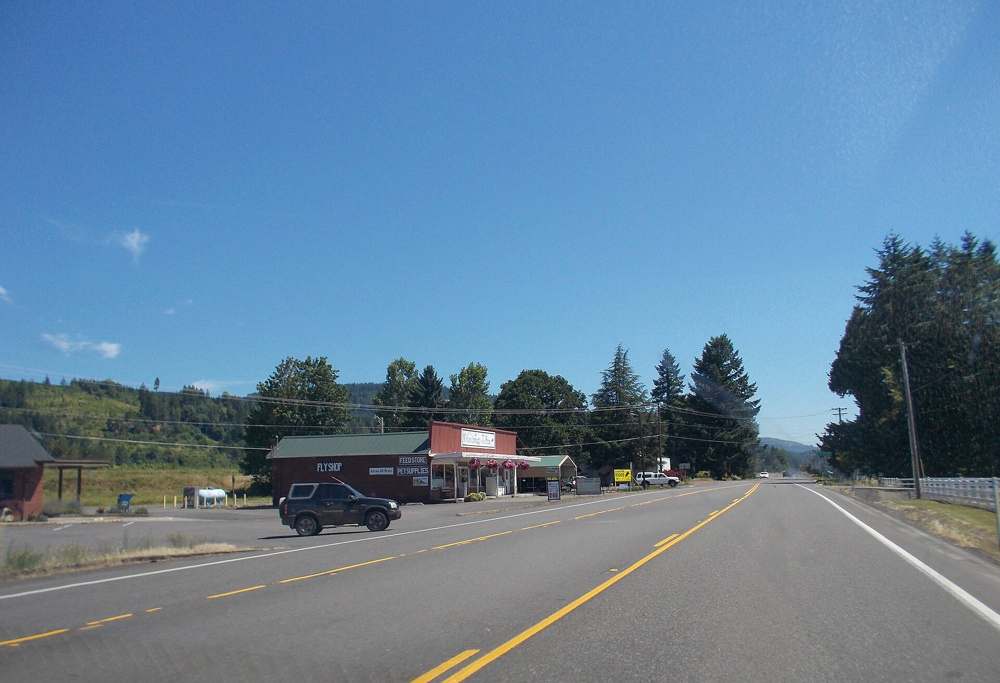

If you are trying to buy your first home around Walterville, local knowledge is not a bonus. It is most of the job.

River frontage, acreage, and rural homes, largely on well and septic. Proximity to the river brings floodplain questions worth checking on the maps. Some parcels carry irrigation or water considerations that need verifying.
And the part I do everywhere: Oregon has real programs for first-time buyers. Below market rate loans through the state bond program, down payment assistance at the state and local level, and homebuyer education classes that unlock the rest. Most renters never find out because nobody ever walked them through it.
Generic advice is worthless on a decision this size. This is what first-time buyers actually involves in Walterville, as opposed to anywhere else in the county.
Parts of the county outside the Eugene and Springfield core have historically fallen inside USDA Rural Development boundaries, which can mean a loan with no down payment for buyers who qualify. Eligibility is decided address by address and the maps get updated, so the only reliable move is to check the specific property rather than assume based on the town name. If it applies to you, it is one of the most useful programs available.
Out here your budget usually buys more space and fewer services. That trade works well for some people and badly for others, and the deciding factor is almost never the house. It is the drive, the well and septic upkeep, and how you actually spend a Saturday. Run the whole monthly picture, not just the payment.
Springfield Public Schools serves Walterville. School assignment in Lane County is by address rather than by the boundary people assume, and district lines do not always follow the obvious streets. If schools matter to your decision, verify the assignment for the specific property with the district rather than trusting a listing field.
Two calls. A lender approved for Oregon Flex Lending, to find out what you qualify for and what the payment really looks like with taxes and insurance. And DevNW in Springfield, which is the designated homeownership center for Lane County, to ask what down payment assistance is currently funded and when the next homebuyer education class runs. Programs change and city-level funds go in and out, so ask rather than read.
This is genuinely rural property, not a subdivision with a view. You take on your own water and waste, longer drives for everything, and weather that occasionally takes the power out. In exchange you get room, quiet, and neighbors who show up with equipment when you need it. Most people who move out here would not go back. The ones who struggle are almost always the ones nobody told in advance.
Head east on the McKenzie Highway past Thurston and Walterville is the first real community you come to. It is river country: orchards, pasture, and homes strung along the highway and the side roads with the McKenzie running through it all. Close enough to Springfield to commute, far enough to feel like you left.
| ZIP codes | 97478 |
| Known for | McKenzie River · McKenzie Highway (OR 126) · Walterville Elementary School · Hendricks Bridge Park |
| Schools | Walterville Elementary is part of Springfield Public Schools and describes itself as a rural school. Older students head into Springfield. |
| Getting to town | A straight shot down 126 |

You want someone who combines real first-time buyers experience with parcel-level knowledge of Walterville. Brett Herring works Walterville as part of his core Lane County territory with The Operative Group at Real Broker, LLC, and lives in Springfield. Call or text 541-968-9422 for a straight local conversation with no pressure attached.
River frontage, acreage, and rural homes, largely on well and septic. Proximity to the river brings floodplain questions worth checking on the maps. Some parcels carry irrigation or water considerations that need verifying.
No. This is the most common and most expensive misconception in the whole process. Many loan programs allow far less, and Oregon down payment assistance can help with what remains. Ask a lender what you actually qualify for before you write off buying.
There are loan paths at a range of credit levels, and the cutoff people imagine is usually higher than reality. If your credit needs work, a good lender will tell you exactly which two or three things to fix and roughly how long it takes. That is a plan, not a rejection.
Closing costs cover lender fees, title, escrow, prepaid taxes and insurance, and recording. They typically run a few percent of the purchase price. Some can be negotiated into the deal, some can be covered by assistance programs, and all of them should be shown to you in writing well before closing.
Buying your first place, selling acreage out east, or landing here from out of state — start with a conversation. No pressure, no script, no disappearing act.
541-968-9422